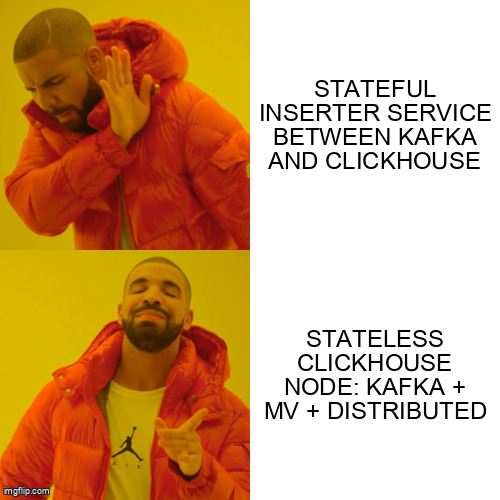
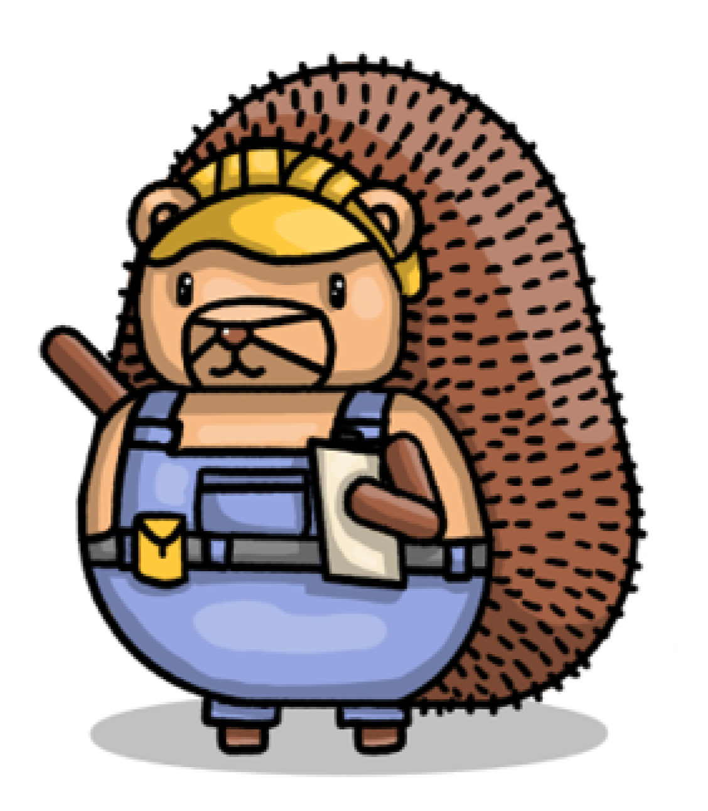

How we turned ClickHouse itself into our Kafka → CH inserter — and deleted the service we were about to build.
James Greenhill · no MergeTree required
Who's talking
Me, and the firehose
James Greenhill — Member of Token Burning Staff, PostHog.
PostHog is open source. One platform, every tool:
Product analytics
Session replay
Feature flags
Data warehouse
Web analytics
Error tracking
Experiments
Surveys
Data pipelines
LLM analytics
Logs
PostHog AI
…and many more
All the analytical data lives in ClickHouse.
Team ClickHouse
trillions
of events
petabytes
of data
01
The pipeline that stopped scaling
Kafka table engines, living on the data nodes.
The textbook pattern
Kafka → CH, the classic recipe
Kafka topic
events
→
DATA node · one ClickHouse process
Kafka table engine
kafka_events · consumer
→
Materialized view
events_mv · per block
→
MergeTree table
sharded_events · storage
Pull-based
ClickHouse fetches at its own pace. Nothing pushes at it.
Resilient to spikes
Backlog waits in Kafka. Backpressure comes for free.
No external writer
No inserter service to build, deploy, or page on.
The problem
One box, two jobs, fighting
Ingestion and queries share the same nodes. A query storm starves Kafka consumption — and vice-versa.
No headroom to recover. If we ever took lag — paused ingestion for any reason — then at above-average peak we didn't have the throughput to catch back up. We'd just keep falling further behind.
The insert is the cheap part. Most of the CPU goes to denormalizing properties off every event — parsing the JSON and writing it into Map columns and dozens of materialized columns. On shared nodes, that work fights your queries for the same cores.
Replay · simulated
What that looked like from the dashboard
We're not the only ones
“The typical situation is a query that uses all the CPU and/or IO, inserts start to pile up, memory grows, which leads to a wonderful OOM, and that means data loss.”
Properties map[string]string
MatBrowser string // keep in
// sync, forever
Every column change ships twice: DDL, then code, in the right order.
Types drift between the two. ClickHouse feeding ClickHouse is one type system.
Two codebases, two on-call surfaces, one schema.
Kafka engine tables on the data nodes
Build a dedicated inserter service
ClickHouse is the inserter. No disk required
A "cluster" is just a list in a config file
02
The insight
We didn't need a new service. We needed a new role for ClickHouse.
Key realization #1
A "cluster" is just a logical list
In ClickHouse, a cluster is just a <remote_servers> entry — and one config can declare many. Nodes can live anywhere, run anything, and be added at will.
<remote_servers>
<posthog> <!-- storage cluster: 10×3 on EC2, NVMe -->
<shard><replica><host>data-1</host></replica> ... </shard> ...
</posthog>
<ingestion-events> <!-- a SEPARATE cluster: stateless K8s pods -->
<shard><replica><host>chi-ingestion-events-0</host></replica></shard> ...
</ingestion-events>
</remote_servers>
EC2 storage and stateless K8s ingestion are separate clusters — just two entries in the same list. The pods are their own cluster; their Distributed tables target posthog to forward writes. Different hardware, bridged by the Distributed engine — never one mixed cluster.
Key realization #2
The inserter we wanted... is a ClickHouse node
STATELESS CH NODE · no MergeTree · no data
Consume from Kafka?
↓
Kafka table engine
the consumer
Transform + batch?
↓
Materialized view
fires per block
Route + INSERT?
↓
Distributed table
the INSERT client
Every feature we'd have built into the inserter, ClickHouse already ships. So run those three objects on a node that stores nothing.

You probably don't need an inserter service.
ClickHouse is already a perfectly good stream processor. Give it a node with no disk to worry about.
03
How it works
Four objects. Two node roles. One native-protocol hop.

The anatomy
Four objects, split across two roles
DATA nodes
① Data table
ReplicatedMergeTree · stores rows
INGESTION nodes (stateless)
② Writable Distributed table
routes INSERTs to the data table
③ Kafka table engine
consumes the topic
④ Materialized view
Kafka table → writable table
The MV reads from the Kafka table and writes to the writable Distributed table. The Distributed table forwards to the MergeTree on the data nodes. Done.
Same schema system as everything else. All four objects live in our existing ClickHouse migrations. A schema change is one migration, and each statement is applied to the role it belongs on.
① Data table — on DATA nodes
The only place that actually stores rows
CREATE TABLE IF NOT EXISTS groups
(
group_type_index UInt8,
group_key VARCHAR,
created_at DateTime64,
team_id Int64,
group_properties VARCHAR,
_timestamp DateTime,
_offset UInt64
)
ENGINE = ReplicatedReplacingMergeTree(
'/clickhouse/tables/{shard}/posthog.groups', '{replica}', _timestamp)
ORDER BY (team_id, group_type_index, group_key)
Plain replicated MergeTree. It has no idea Kafka exists. This is the only stateful piece.
Broker lists come from named collections — which is how we run MSK and WarpStream side by side (more later). One consumer per INGESTION_SMALL node; more on the hotter tiers.
④ Materialized view — on INGESTION nodes
The wire between consumer and writer
CREATE MATERIALIZED VIEW IF NOT EXISTS groups_mv
TO writable_groups
AS SELECT
group_type_index, group_key, created_at,
team_id, group_properties,
_timestamp, _offset
FROM kafka_groups;
Selecting from the Kafka table advances the offsets.
Fires once per block. Transform in the SELECT.
Declarative, in a migration. ClickHouse owns retries and backpressure.
kafka_groups
③ Kafka table engine · consumes
↓ FROM
groups_mv
④ Materialized view · per block
↓ TO
writable_groups
② Distributed · routes INSERTs
↓ native protocol
groups
① ReplicatedMergeTree · DATA nodes
That's the whole inserter. One statement wires the consumer to the writer.
Application A · end to end
The whole path, then we delete the pod
The pod holds no data. Delete it and the uncommitted rows are simply re-read from Kafka.
No ON CLUSTER. run_sql_with_exceptions fans each statement to exactly the hosts whose macro hostClusterRole matches — so the MergeTree lands on storage, and Kafka/MV/Distributed land on the stateless tier.
The roles
Ingestion is tiered by throughput
One NodeRole per tier. Each is its own logical cluster of stateless pods, sized to the topics it drains.
INGESTION_SMALL
small
1 Kafka consumer per pod
low-volume topics
INGESTION_MEDIUM
medium
4 Kafka consumers per pod
mid-volume topics
INGESTION_EVENTS
events
many pods, many shards
the main event firehose
↓ native protocol
DATA
The sharded MergeTree storage cluster.Scaling ingestion never touches it.
More roles, same shape: shufflehog, ai_events, aux, ops, sessions, logs, endpoints … Adding capacity means adding cheap, stateless pods.
The catch behind the tiers
Tuning the Kafka table engine is the fiddly part
ENGINE = Kafka(warpstream_ingestion,
kafka_topic_list = 'events', kafka_group_name = 'clickhouse',
kafka_format = 'JSONEachRow',
kafka_num_consumers = 4, -- ≤ topic partitions AND ≤ physical cores
kafka_thread_per_consumer = 1); -- without this, all 4 squash onto ONE thread
The trap kafka_thread_per_consumer defaults to 0 — rows from every consumer get squashed into a single block on one thread. So raising kafka_num_consumers alone buys you nothing; you only get independent, parallel flushes with it set to 1.
Both are ENGINE settings in the DDL, capped by partition count and core count. Retuning means dropping and recreating the Kafka table — and getting it wrong is silent lag. This is the real lever behind small / medium / events.
The Kafka engine's sneakiest default · simulated
One flag, one thread or four
04
In production
Two regions, ~60 stateless ingestion nodes, zero stored bytes.
The shape of it
Storage vs ingestion, by the numbers
Storage (stateful, EC2 + NVMe)
US: 10 shards × 3 replicas = 30 nodes
EU: 8 shards × 3 replicas = 24 nodes
i8ge metal, tiered NVMe→EBS→S3
Ingestion (stateless, K8s + EC2)
US: ~38 nodes — small / medium / events tiers
EU: ~22 nodes
commodity instances, recycled freely
Ingestion outnumbers storage by node count — but costs a fraction, because there's no data to hold or protect.
"Stateless" — literally
The config that proves there's nothing to lose
EC2 ingestion hosts (Ansible inventory):
hostClusterRole: ingestion
raid_volumes: [] # no NVMe / EBS data disks
backup_tables: [] # nothing to back up
clickhouse_disk_balancer_enabled: false
K8s ingestion pods (chart values):
volumeTemplates:
- name: ingestion
reclaimPolicy: Delete # PVC dies with the pod
resources:
requests: { storage: 10Gi } # local cache only
🙌 The K8s ingestion tier runs on Altinity's clickhouse-operator — each pod is a ClickHouseInstallation CRD (the chi-ingestion-* pods in kubectl get pods). Thanks for the operator, Altinity 👋
Pods get recycled and lose their disk — and it doesn't matter. The data is in Kafka and on the storage cluster; the ingestion tier is pure compute.
Watching a tier that stores nothing
A pod dies, one panel twitches
The queries behind the panels
ClickHouse already reports on itself
-- Is every consumer alive, assigned, and polling?
SELECT hostName() AS pod, table, consumer_id,
length(assignments.partition_id) AS partitions,
now() - last_poll_time AS secs_since_poll,
num_messages_read, num_rebalance_revocations,
exceptions.text[-1] AS last_error
FROM clusterAllReplicas('ingestion-events', system.kafka_consumers)
-- Throughput per pod ($__timeFilter & friends: Grafana ClickHouse data source macros)
SELECT $__timeInterval(event_time) AS time, hostName() AS pod,
sum(ProfileEvent_KafkaMessagesRead) / $__interval_s AS msgs_per_s
FROM clusterAllReplicas('ingestion-events', system.metric_log)
WHERE $__timeFilter(event_time)
GROUP BY time, pod ORDER BY time
Lag isn't here Consumer lag is a broker-side number. Scrape it from your Kafka exporter or WarpStream's metrics.
CurrentMetric_DistributedFilesToInsert climbing means async Distributed sends are queueing: the storage tier is pushing back.
One pattern, two jobs
Same shape, different sink
Every stateless node is the same core — a Kafka table engine → materialized view, no MergeTree. The only thing that changes is what the MV writes into.
Application A · ingestion
MV
→
Distributed
table
→
sharded MergeTree
data nodes
Sink = ClickHouse. The inserter service we never built.
Application B · ShuffleHog
MV
→
Kafka table
producer
→
re-partitioned
topic
Sink = Kafka, re-keyed. Re-shapes the stream for a downstream service.
Application B · why ShuffleHog exists
Partition by the key your consumer aggregates on
events
raw stream
→
ShuffleHog
re-key: project+event
→
re-partitioned
key → 1 partition
→
propdefs
buffer + squash
→
Postgres
upserts
Downstream is propdefs (property-defs-rs): it tracks every project + event + property key seen, buffers them, and flushes idempotent upserts into Postgres.
The bug The topic wasn't partitioned by project+event. The same (project, event) arrived on many partitions → many consumers upserting the same Postgres rows → tuple-lock contention → everything crawled.
The fix: re-partition so (project + event) hashes to one partition. Exactly one consumer owns each key, so the squash upserts with zero row contention in PG.
Application B · simulated
Same rows, same consumers, no lock queue
A bonus the pattern unlocked
Swapping Kafka under a live firehose
Migrating MSK → WarpStream with zero downtime: run a fully parallel write path per backend — its own Kafka table engine → MV → Distributed table, separate consumer groups — both landing in the same data table.
Cut over by adding or removing a whole leg. No inserter to rewrite, no dual-write code — just DDL.
05
What we learned
The tradeoff
Sharp edges
The cost of this pattern is schema management. Every object — the data table, the Kafka table engine, the MV, the Distributed writable table — is schema we own and migrate, now across multiple node roles.
It's real engineering — but far simpler than building, scaling, and being on call for a stateful inserter service.
And we didn't start from zero: our complex topology already forced us to build a migration system. The stateless ingestion tiers just added a few layers: small, medium, events.
Why it stays fast: the operator-managed clusters are shards-only (replicasCount: 1) — by design. A migration lands on every node at once, instead of rolling through replicas and waiting on ZooKeeper. (The 3× replicas live on the EC2 data cluster, where durability matters; the stateless tier's tables aren't replicated anyway.)
Checked against someone else's scars
Tinybird's ingestion pain list, resolved
They hit (quoted)
With a stateless ingestion tier
“A query that uses all the CPU… inserts start to pile up… OOM”
Queries and inserts never share a box. An ingestion OOM is a pod restart; rows are re-read from Kafka.
“I always recommend having a replica just for writes”
One step further: the write tier holds no data. No replica to sync, no disk to lose.
“An MV that's slightly wrong… OOMs the server”
The MV runs on a disposable pod. Blast radius is one ingestion pod, not a data node serving queries.
“Backpressure… some people put Kafka before ClickHouse”
We do. The Kafka engine pulls, so peaks and slow merges show up as lag, not loss. WarpStream keeps the queue cheap.
“Duplicated data: if an insert fails…”
Partly. Delivery is at-least-once; ReplacingMergeTree dedupes on merge, but anything reading before the merge still sees the duplicate.
Ingestion scales independently from the data & query tiers. We add stateless ingestion pods without touching storage — and because the query tier's resources are now dedicated, query performance is far more deterministic.
Query storms no longer stall ingestion (and vice-versa).
Scale ingestion = add stateless pods, minutes not days.
Zero inserter service to build, staff, or be paged for.
The one thing
Reach for ClickHouse's own primitives before you build a service around it.
Kafka engine+materialized view+Distributed table
on a node that stores nothing is a stream processor.
Thanks — and we're hiring
Questions?
The pattern, the migrations, and the topology are all open source.